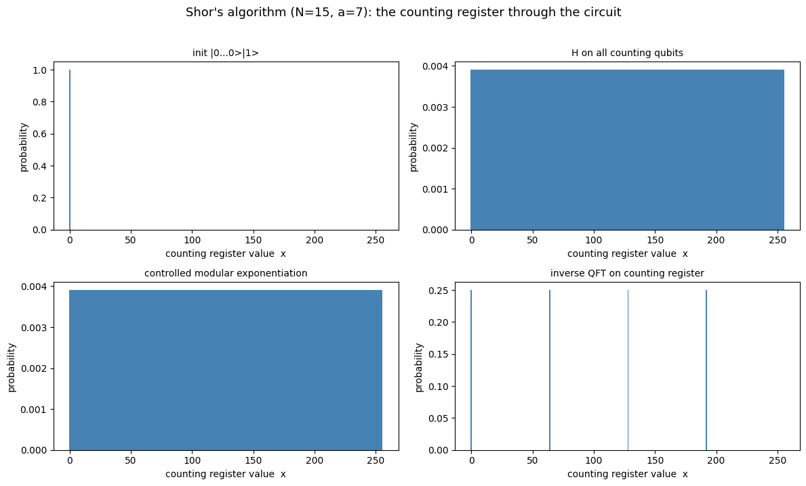
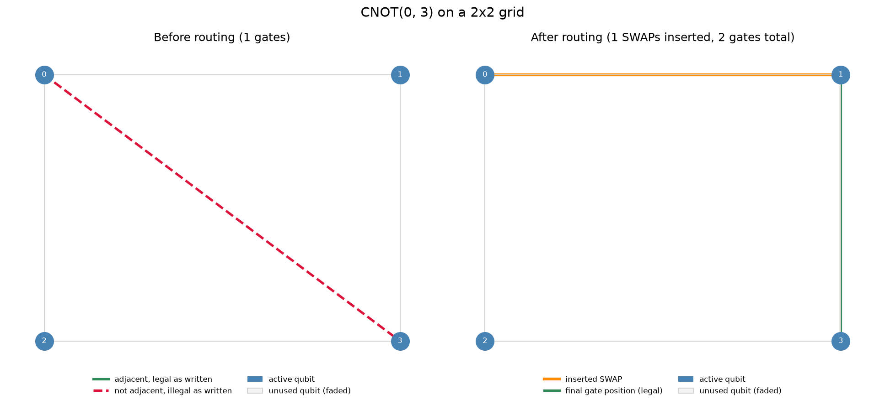

I build software across layers: from computer vision to qubit routing.
Quantum software draws on linear algebra, compilers, systems, and ML tooling at once.
I'm training across all of them: a BS in Computer Science, an MS in Quantum Engineering
(software focus, May 2027) at Colorado School of Mines, and hands-on work in computer vision and
machine learning. I check my understanding by building things end to end. Below, I wrote a quantum
simulator and a hardware-aware qubit router from scratch instead of calling a library.
Looking for: new-grad software roles starting after my May 2027 graduation,
plus co-ops and internships before then. Quantum software is the long-term goal; ML, computer vision,
and general software engineering roles are equally welcome.
In plain terms: I built a quantum computer simulator from scratch and used it to factor 15, the same algorithm that threatens today's encryption at scale.
Problem
Understand why Shor's algorithm works, not just that it does, by implementing the whole pipeline with no quantum library.
Approach
A state-vector simulator where every gate is an explicit matrix or tensor operation, plus the QFT, phase estimation, and a modular-exponentiation oracle. The oracle is an index permutation, not a gate-level arithmetic circuit. At 12 qubits, gates switch to tensor-reshape application so no 4096×4096 matrices are built.
Result
Factors N=15 end to end and recovers the period from the measured peaks. 217 passing tests. The figure below shows the key insight: the period is invisible in the probabilities after modular exponentiation (it lives in the phases) until the inverse QFT turns it into peak spacing.

Counting-register distribution at each stage, N=15, a=7. Four peaks at spacing 256/4 reveal the period r=4.
In plain terms: quantum chips can only connect neighboring qubits, so I wrote the routing step that rearranges a program to fit the chip's wiring.
Problem
Algorithms assume any qubit can interact with any other. Real chips only allow two-qubit gates between physically adjacent qubits.
Approach
A routing pass that tracks the logical-to-physical qubit mapping and inserts SWAPs along the BFS shortest path whenever a gate isn't adjacent. It targets grid, ring, and heavy-hex topologies, with built-in tracing so every SWAP can be inspected.
Result
On a 5-qubit QFT over a heavy-hex lattice it uses 20 SWAPs against 23 for a naive spanning-tree baseline. It is a greedy heuristic: no lookahead, no noise-awareness. Those are the gaps SABRE-style routers close.

A CNOT between non-adjacent qubits, made legal by one inserted SWAP.
In plain terms: a phone on the sideline streams a match live to any browser, with delay under a second, from a free-tier cloud server.
Problem
Streaming a live match normally adds seconds of delay and costs money. I wanted near-real-time video, publishable from a phone on cellular data, that only I can start but anyone can watch.
Approach
The phone publishes over WebRTC (WHIP) to an SRS media server, and viewers play it back in the browser (WHEP). SRS's publish endpoint is never exposed to the internet. It is reachable only through my Node server, which checks a signed, HTTP-only session cookie and rate-limits logins, so the auth check, not a hidden button, protects the stream. Caddy provides HTTPS, Docker Compose runs the three services, and Terraform provisions the GCP VM, firewall rules, and static IP. The static IP is advertised as the WebRTC candidate, so phones behind carrier NAT connect without a TURN relay.
Result
Sub-second latency, reproducible deploys from one terraform apply, and a cost that stays inside the GCP free tier.
Beyond quantum
Computer vision. Graduate Assistant for CSCI 437/507. I designed a CNN training assignment (ConvNetJS on CIFAR-10) and review students' image-processing code. As a summer instructor I built an autonomous soccer framework for VEX AIM robots using computer vision.
Machine learning. A disaster-tweet classifier on 10,000+ posts (TensorFlow/Keras, 0.79 F1), benchmarked against Naive Bayes, SVMs, and other model families.
Coursework. The MS program covers quantum algorithms and complexity theory, AI/ML, and computer architecture and HPC. My BS work included operating systems in C/C++ (processes, pipes, POSIX threads, scheduling, virtual memory).
Experience
Jun 2026 – nowGraduate Assistant, Computer Vision (CSCI 437/507), Colorado School of Mines
May – Jul 2026Lead Instructor, DECTech Summer Program, Colorado School of Mines. Led an intern team building AI, robotics, and software curriculum.
Jun – Jul 2026Project Advisor, Computing For Good, Colorado School of Mines. Advised a student team through Agile sprints on a tree-carbon estimator.
Outside the code
Mines men's rugby: 20+ hours a week of training and national-level competition alongside a dual-degree course load. It taught me to decide quickly under pressure and to keep a demanding schedule.